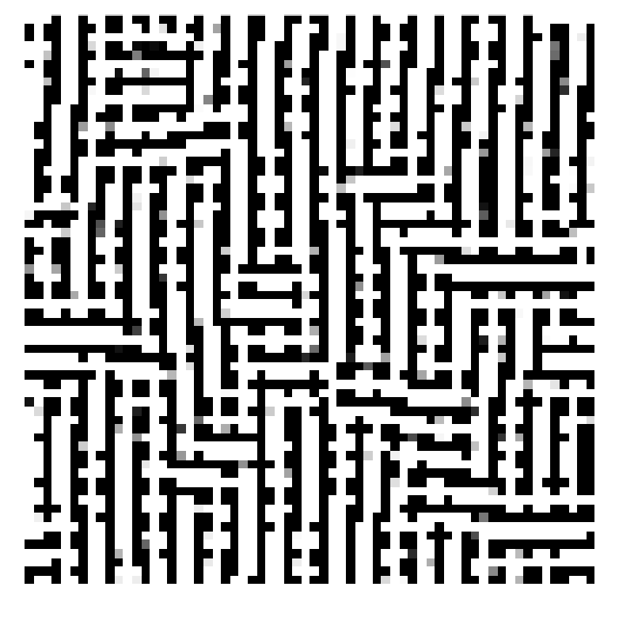

Using Lenia, a continuous cellular automata framework, to model growth and evolutionary dynamics of cancer.
Evolution of Gene Regulatory Networks to desired properties using Evolutionary algorithms
This project is a simulation of cell migration and an attempt to replicate the formation fo finger like structures
Studying pattern formation (Turing patterns) inlife using reaction-diffusion systems
Emergence of global order in a system of locally interacting agents. As the noise decreases, order-appears faster.
A simple freeway traffic model that shows the formation of traffic jams without any external effects